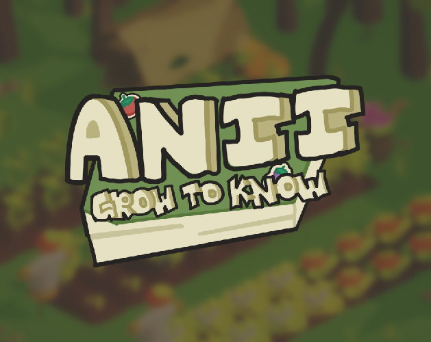
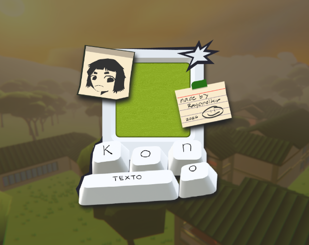

Hi, I'm Kirby. Welcome to my corner of game dev.
Kirby Bilbao.
Game developer.
Iloilo, Philippines Co-founder, Ukiyo Studios
I build games and the systems that make them work. Four years of hands-on development, from Unity gameplay and technical art to commissioned Godot games. I take projects from the first prototype to the final build.
- Unity & C#
- Godot
- Game systems
- Technical art
Anii!
Grow to Know.
Plant.
Learn.
Grow.
A garden that grows
your curiosity.
Plant crops, answer quizzes, and make a garden your own. Anii! blends farming with learning about Filipino Bahay Kubo crops and agricultural tools.
Play on itch.io- Engine
- Unity
- Team
- Ukiyo Studios
- My contributions
- Programming, game & learning design, art & interface, team & release leadership
Inside the game
Select a screenshot to enlarge.


Behind the build.
The ideas and work
behind the games.

Early draftGrowing more than
a garden in Anii!
How farming and agricultural learning come together in a game built around curiosity.
Read case study
Early draftMaking document
formatting a game.
A look at KonTEXTo, an educational game turning everyday layout rules into play.
Read case studyThese stories are early drafts. Specific development decisions and outcomes are still being documented.
More to play.
Pick a game.
See what I've been making.